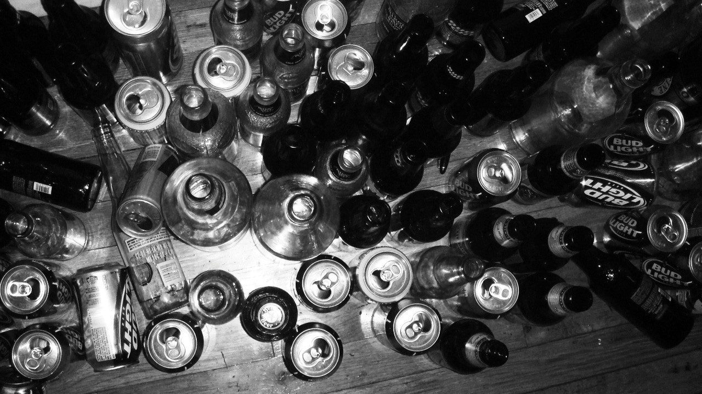
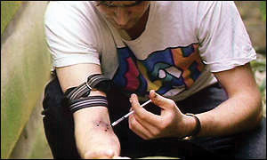
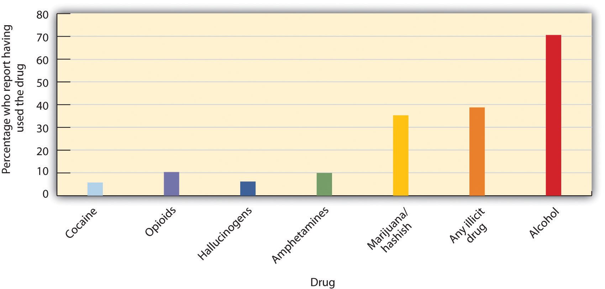

A psychoactive drugA chemical that changes our states of consciousness, and particularly our perceptions and moods. is a chemical that changes our states of consciousness, and particularly our perceptions and moods. These drugs are commonly found in everyday foods and beverages, including chocolate, coffee, and soft drinks, as well as in alcohol and in over-the-counter drugs, such as aspirin, Tylenol, and cold and cough medication. Psychoactive drugs are also frequently prescribed as sleeping pills, tranquilizers, and antianxiety medications, and they may be taken, illegally, for recreational purposes. As you can see in Table 5.1 "Psychoactive Drugs by Class", the four primary classes of psychoactive drugs are stimulants, depressants, opioids, and hallucinogens.
Psychoactive drugs affect consciousness by influencing how neurotransmitters operate at the synapses of the central nervous system (CNS). Some psychoactive drugs are agonists, which mimic the operation of a neurotransmitter; some are antagonists, which block the action of a neurotransmitter; and some work by blocking the reuptake of neurotransmitters at the synapse.
Table 5.1 Psychoactive Drugs by Class
| Mechanism | Symptoms | Drug | Dangers and side effects | Psychological dependence | Physical dependence | Addiction potential |
Addiction potential
|
|---|---|---|---|---|---|---|---|
| Stimulants | |||||||
| Stimulants block the reuptake of dopamine, norepinephrine, and serotonin in the synapses of the CNS. | Enhanced mood and increased energy | Caffeine | May create dependence | Low | Low | Low | |
| Nicotine | Has major negative health effects if smoked or chewed | High | High | High | |||
| Cocaine | Decreased appetite, headache | Low | Low | Moderate | |||
| Amphetamines | Possible dependence, accompanied by severe “crash” with depression as drug effects wear off, particularly if smoked or injected | Moderate | Low | Moderate to high | |||
| Depressants | |||||||
| Depressants change consciousness by increasing the production of the neurotransmitter GABA and decreasing the production of the neurotransmitter acetylcholine, usually at the level of the thalamus and the reticular formation. | Calming effects, sleep, pain relief, slowed heart rate and respiration | Alcohol | Impaired judgment, loss of coordination, dizziness, nausea, and eventually a loss of consciousness | Moderate | Moderate | Moderate | |
| Barbiturates and benzodiazepines | Sluggishness, slowed speech, drowsiness, in severe cases, coma or death | Moderate | Moderate | Moderate | |||
| Toxic inhalants | Brain damage and death | High | High | High | |||
| Opioids | |||||||
| The chemical makeup of opioids is similar to the endorphins, the neurotransmitters that serve as the body’s “natural pain reducers.” | Slowing of many body functions, constipation, respiratory and cardiac depression, and the rapid development of tolerance | Opium | Side effects include nausea, vomiting, tolerance, and addiction. | Moderate | Moderate | Moderate | |
| Morphine | Restlessness, irritability, headache and body aches, tremors, nausea, vomiting, and severe abdominal pain | High | Moderate | Moderate | |||
| Heroin | All side effects of morphine but about twice as addictive as morphine | High | Moderate | High | |||
| Hallucinogens | |||||||
| The chemical compositions of the hallucinogens are similar to the neurotransmitters serotonin and epinephrine, and they act primarily by mimicking them. | Altered consciousness; hallucinations | Marijuana | Mild intoxication; enhanced perception | Low | Low | Low | |
| LSD, mescaline, PCP, and peyote | Hallucinations; enhanced perception | Low | Low | Low | |||
In some cases the effects of psychoactive drugs mimic other naturally occurring states of consciousness. For instance, sleeping pills are prescribed to create drowsiness, and benzodiazepines are prescribed to create a state of relaxation. In other cases psychoactive drugs are taken for recreational purposes with the goal of creating states of consciousness that are pleasurable or that help us escape our normal consciousness.
The use of psychoactive drugs, and especially those that are used illegally, has the potential to create very negative side effects (Table 5.1 "Psychoactive Drugs by Class"). This does not mean that all drugs are dangerous, but rather that all drugs can be dangerous, particularly if they are used regularly over long periods of time. Psychoactive drugs create negative effects not so much through their initial use but through the continued use, accompanied by increasing doses, that ultimately may lead to drug abuse.
The problem is that many drugs create toleranceAn increase in the dose of a drug required to produce the same effect.: an increase in the dose required to produce the same effect, which makes it necessary for the user to increase the dosage or the number of times per day that the drug is taken. As the use of the drug increases, the user may develop a dependenceThe need to use a drug or other substance regularly., defined as a need to use a drug or other substance regularly. Dependence can be psychological, in which the drug is desired and has become part of the everyday life of the user, but no serious physical effects result if the drug is not obtained; or physical, in which serious physical and mental effects appear when the drug is withdrawn. Cigarette smokers who try to quit, for example, experience physical withdrawal symptoms, such as becoming tired and irritable, as well as extreme psychological cravings to enjoy a cigarette in particular situations, such as after a meal or when they are with friends.
Users may wish to stop using the drug, but when they reduce their dosage they experience withdrawalNegative experiences that accompany reducing or stopping drug use, including physical pain and other symptoms.—negative experiences that accompany reducing or stopping drug use, including physical pain and other symptoms. When the user powerfully craves the drug and is driven to seek it out, over and over again, no matter what the physical, social, financial, and legal cost, we say that he or she has developed an addictionWhen the user powerfully craves the drug and is driven to seek it out, over and over again, no matter what the physical, social, financial, and legal cost. to the drug.
It is a common belief that addiction is an overwhelming, irresistibly powerful force, and that withdrawal from drugs is always an unbearably painful experience. But the reality is more complicated and in many cases less extreme. For one, even drugs that we do not generally think of as being addictive, such as caffeine, nicotine, and alcohol, can be very difficult to quit using, at least for some people. On the other hand, drugs that are normally associated with addiction, including amphetamines, cocaine, and heroin, do not immediately create addiction in their users. Even for a highly addictive drug like cocaine, only about 15% of users become addicted (Robinson & Berridge, 2003; Wagner & Anthony, 2002).Robinson, T. E., & Berridge, K. C. (2003). Addiction. Annual Review of Psychology, 54, 25–53; Wagner, F. A., & Anthony, J. C. (2002). From first drug use to drug dependence: Developmental periods of risk for dependence upon marijuana, cocaine, and alcohol. Neuropsychopharmacology, 26(4), 479–488. Furthermore, the rate of addiction is lower for those who are taking drugs for medical reasons than for those who are using drugs recreationally. Patients who have become physically dependent on morphine administered during the course of medical treatment for a painful injury or disease are able to be rapidly weaned off the drug afterward, without becoming addicts. Robins, Davis, and Goodwin (1974)Robins, L. N., Davis, D. H., & Goodwin, D. W. (1974). Drug use by U.S. Army enlisted men in Vietnam: A follow-up on their return home. American Journal of Epidemiology, 99, 235–249. found that the majority of soldiers who had become addicted to morphine while overseas were quickly able to stop using after returning home.
This does not mean that using recreational drugs is not dangerous. For people who do become addicted to drugs, the success rate of recovery is low. These drugs are generally illegal and carry with them potential criminal consequences if one is caught and arrested. Drugs that are smoked may produce throat and lung cancers and other problems. Snorting (“sniffing”) drugs can lead to a loss of the sense of smell, nosebleeds, difficulty in swallowing, hoarseness, and chronic runny nose. Injecting drugs intravenously carries with it the risk of contracting infections such as hepatitis and HIV. Furthermore, the quality and contents of illegal drugs are generally unknown, and the doses can vary substantially from purchase to purchase. The drugs may also contain toxic chemicals.
Another problem is the unintended consequences of combining drugs, which can produce serious side effects. Combining drugs is dangerous because their combined effects on the CNS can increase dramatically and can lead to accidental or even deliberate overdoses. For instance, ingesting alcohol or benzodiazepines along with the usual dose of heroin is a frequent cause of overdose deaths in opiate addicts, and combining alcohol and cocaine can have a dangerous impact on the cardiovascular system (McCance-Katz, Kosten, & Jatlow, 1998).McCance-Katz, E., Kosten, T., & Jatlow, P. (1998). Concurrent use of cocaine and alcohol is more potent and potentially more toxic than use of either alone—A multiple-dose study 1. Biological Psychiatry, 44(4), 250–259.
Although all recreational drugs are dangerous, some can be more deadly than others. One way to determine how dangerous recreational drugs are is to calculate a safety ratio, based on the dose that is likely to be fatal divided by the normal dose needed to feel the effects of the drug. Drugs with lower ratios are more dangerous because the difference between the normal and the lethal dose is small. For instance, heroin has a safety ratio of 6 because the average fatal dose is only 6 times greater than the average effective dose. On the other hand, marijuana has a safety ratio of 1,000. This is not to say that smoking marijuana cannot be deadly, but it is much less likely to be deadly than is heroin. The safety ratios of common recreational drugs are shown in Table 5.2 "Popular Recreational Drugs and Their Safety Ratios".
Table 5.2 Popular Recreational Drugs and Their Safety Ratios
| Drug | Description | Street or brand names | Safety ratio |
|---|---|---|---|
| Heroin | Strong depressant | Smack, junk, H | 6 |
| GHB (Gamma hydroxy butyrate) | “Rave” drug (not Ecstacy), also used as a “date rape” drug. | Georgia home boy, liquid ecstasy, liquid X, liquid G, fantasy | 8 |
| Isobutyl nitrite | Depressant and toxic inhalant | Poppers, rush, locker room | 8 |
| Alcohol | Active compound is ethanol | 10 | |
| DXM (Dextromethorphan) | Active ingredient in over-the-counter cold and cough medicines | 10 | |
| Methamphetamine | May be injected or smoked | Meth, crank | 10 |
| Cocaine | May be inhaled or smoked | Crack, coke, rock, blue | 15 |
| MDMA (methylenedioxymethamphetamine) | Very powerful stimulant | Ecstasy | 16 |
| Codeine | Depressant | 20 | |
| Methadone | Opioid | 20 | |
| Mescaline | Hallucinogen | 24 | |
| Benzodiazepine | Prescription tranquilizer | Centrax, Dalmane, Doral, Halcion, Librium, ProSom, Restoril, Xanax, Valium | 30 |
| Ketamine | Prescription anesthetic | Ketanest, Ketaset, Ketalar | 40 |
| DMT (Dimethyltryptamine) | Hallucinogen | 50 | |
| Phenobarbital | Usually prescribed as a sleeping pill | Luminal (Phenobarbital), Mebaraland, Nembutal, Seconal, Sombulex | 50 |
| Prozac | Antidepressant | 100 | |
| Nitrous oxide | Often inhaled from whipped cream dispensers | Laughing gas | 150 |
| Lysergic acid diethylamide (LSD) | Acid | 1,000 | |
| Marijuana (Cannabis) | Active ingredient is THC | Pot, spliff, weed | 1,000 |
| Drugs with lower safety ratios have a greater risk of brain damage and death. | |||
Source: Gable, R. (2004). Comparison of acute lethal toxicity of commonly abused psychoactive substances. Addiction, 99(6), 686–696.
A stimulantA class of psychoactive drugs that operate by blocking the reuptake of dopamine, norepinephrine, and serotonin in the synapses of the central nervous system. is a psychoactive drug that operates by blocking the reuptake of dopamine, norepinephrine, and serotonin in the synapses of the CNS. Because more of these neurotransmitters remain active in the brain, the result is an increase in the activity of the sympathetic division of the autonomic nervous system (ANS). Effects of stimulants include increased heart and breathing rates, pupil dilation, and increases in blood sugar accompanied by decreases in appetite. For these reasons, stimulants are frequently used to help people stay awake and to control weight.
Used in moderation, some stimulants may increase alertness, but used in an irresponsible fashion they can quickly create dependency. A major problem is the “crash” that results when the drug loses its effectiveness and the activity of the neurotransmitters returns to normal. The withdrawal from stimulants can create profound depression and lead to an intense desire to repeat the high.
CaffeineA bitter psychoactive drug found in the beans, leaves, and fruits of plants. is a bitter psychoactive drug found in the beans, leaves, and fruits of plants, where it acts as a natural pesticide. It is found in a wide variety of products, including coffee, tea, soft drinks, candy, and desserts. In North America, more than 80% of adults consume caffeine daily (Lovett, 2005).Lovett, R. (2005, September 24). Coffee: The demon drink? New Scientist, 2518. Retrieved from http://www.newscientist.com/article.ns?id=mg18725181.700 Caffeine acts as a mood enhancer and provides energy. Although the U.S. Food and Drug Administration lists caffeine as a safe food substance, it has at least some characteristics of dependence. People who reduce their caffeine intake often report being irritable, restless, and drowsy, as well as experiencing strong headaches, and these withdrawal symptoms may last up to a week. Most experts feel that using small amounts of caffeine during pregnancy is safe, but larger amounts of caffeine can be harmful to the fetus (U.S. Food and Drug Administration, 2007).U.S. Food and Drug Administration. (2007). Medicines in my home: Caffeine and your body. Retrieved from http://www.fda.gov/downloads/Drugs/ResourcesForYou/Consumers/BuyingUsingMedicineSafely/UnderstandingOver-the-CounterMedicines/UCM205286.pdf
NicotineA psychoactive drug found in tobacco products. is a psychoactive drug found in the nightshade family of plants, where it acts as a natural pesticide. Nicotine is the main cause for the dependence-forming properties of tobacco use, and tobacco use is a major health threat. Nicotine creates both psychological and physical addiction, and it is one of the hardest addictions to break. Nicotine content in cigarettes has slowly increased over the years, making quitting smoking more and more difficult. Nicotine is also found in smokeless (chewing) tobacco.
People who want to quit smoking sometimes use other drugs to help them. For instance, the prescription drug Chantix acts as an antagonist, binding to nicotine receptors in the synapse, which prevents users from receiving the normal stimulant effect when they smoke. At the same time, the drug also releases dopamine, the reward neurotransmitter. In this way Chantix dampens nicotine withdrawal symptoms and cravings. In many cases people are able to get past the physical dependence, allowing them to quit smoking at least temporarily. In the long run, however, the psychological enjoyment of smoking may lead to relapse.
CocaineAn addictive drug obtained from the leaves of the coca plant. is an addictive drug obtained from the leaves of the coca plant. In the late 19th and early 20th centuries, it was a primary constituent in many popular tonics and elixirs and, although it was removed in 1905, was one of the original ingredients in Coca-Cola. Today cocaine is taken illegally as recreational drug.
Cocaine has a variety of adverse effects on the body. It constricts blood vessels, dilates pupils, and increases body temperature, heart rate, and blood pressure. It can cause headaches, abdominal pain, and nausea. Since cocaine also tends to decrease appetite, chronic users may also become malnourished. The intensity and duration of cocaine’s effects, which include increased energy and reduced fatigue, depend on how the drug is taken. The faster the drug is absorbed into the bloodstream and delivered to the brain, the more intense the high. Injecting or smoking cocaine produces a faster, stronger high than snorting it. However, the faster the drug is absorbed, the faster the effects subside. The high from snorting cocaine may last 30 minutes, whereas the high from smoking “crack” cocaine may last only 10 minutes. In order to sustain the high, the user must administer the drug again, which may lead to frequent use, often in higher doses, over a short period of time (National Institute on Drug Abuse, 2009).National Institute on Drug Abuse. (2009). Cocaine abuse and addiction. Retrieved from http://www.nida.nih.gov/researchreports/cocaine/cocaine.html Cocaine has a safety ratio of 15, making it a very dangerous recreational drug.
AmphetamineA stimulant that produces increased wakefulness and focus, along with decreased fatigue and appetite. is a stimulant that produces increased wakefulness and focus, along with decreased fatigue and appetite. Amphetamine is used in prescription medications to treat attention deficit disorder (ADD) and narcolepsy, and to control appetite. Some brand names of amphetamines are Adderall, Benzedrine, Dexedrine, and Vyvanse. But amphetamine (“speed”) is also used illegally as a recreational drug. The methylated version of amphetamine, methamphetamine (“meth” or “crank”), is currently favored by users, partly because it is available in ampoules ready for use by injection (Csaky & Barnes, 1984).Csaky, T. Z., & Barnes, B. A. (1984). Cutting’s handbook of pharmacology (7th ed.). East Norwalk, CT: Appleton-Century-Crofts. Meth is a highly dangerous drug with a safety ratio of only 10.
Amphetamines may produce a very high level of tolerance, leading users to increase their intake, often in “jolts” taken every half hour or so. Although the level of physical dependency is small, amphetamines may produce very strong psychological dependence, effectively amounting to addiction. Continued use of stimulants may result in severe psychological depression. The effects of the stimulant methylenedioxymethamphetamine (MDMA), also known as “Ecstasy,” provide a good example. MDMA is a very strong stimulant that very successfully prevents the reuptake of serotonin, dopamine, and norepinephrine. It is so effective that when used repeatedly it can seriously deplete the amount of neurotransmitters available in the brain, producing a catastrophic mental and physical “crash” resulting in serious, long-lasting depression. MDMA also affects the temperature-regulating mechanisms of the brain, so in high doses, and especially when combined with vigorous physical activity like dancing, it can cause the body to become so drastically overheated that users can literally “burn up” and die from hyperthermia and dehydration.
In contrast to stimulants, which work to increase neural activity, a depressant acts to slow down consciousness. A depressantA class of psychoactive drugs that reduce the activity of the CNS. is a psychoactive drug that reduces the activity of the CNS. Depressants are widely used as prescription medicines to relieve pain, to lower heart rate and respiration, and as anticonvulsants. Depressants change consciousness by increasing the production of the neurotransmitter GABA and decreasing the production of the neurotransmitter acetylcholine, usually at the level of the thalamus and the reticular formation. The outcome of depressant use (similar to the effects of sleep) is a reduction in the transmission of impulses from the lower brain to the cortex (Csaky & Barnes, 1984).Csaky, T. Z., & Barnes, B. A. (1984). Cutting’s handbook of pharmacology (7th ed.). East Norwalk, CT: Appleton-Century-Crofts.
The most commonly used of the depressants is alcoholA colorless liquid, produced by the fermentation of sugar or starch, that is the intoxicating agent in fermented drinks., a colorless liquid, produced by the fermentation of sugar or starch, that is the intoxicating agent in fermented drinks. Alcohol is the oldest and most widely used drug of abuse in the world. In low to moderate doses, alcohol first acts to remove social inhibitions by slowing activity in the sympathetic nervous system. In higher doses, alcohol acts on the cerebellum to interfere with coordination and balance, producing the staggering gait of drunkenness. At high blood levels, further CNS depression leads to dizziness, nausea, and eventually a loss of consciousness. High enough blood levels such as those produced by “guzzling” large amounts of hard liquor at parties can be fatal. Alcohol is not a “safe” drug by any means—its safety ratio is only 10.
Alcohol use is highly costly to societies because so many people abuse alcohol and because judgment after drinking can be substantially impaired. It is estimated that almost half of automobile fatalities are caused by alcohol use, and excessive alcohol consumption is involved in a majority of violent crimes, including rape and murder (Abbey, Ross, McDuffie, & McAuslan, 1996).Abbey, A., Ross, L. T., McDuffie, D., & McAuslan, P. (1996). Alcohol and dating risk factors for sexual assault among college women. Psychology of Women Quarterly, 20(1), 147–169. Alcohol increases the likelihood that people will respond aggressively to provocations (Bushman, 1993, 1997; Graham, Osgood, Wells, & Stockwell, 2006).Bushman, B. J. (1993). Human aggression while under the influence of alcohol and other drugs: An integrative research review. Current Directions in Psychological Science, 2(5), 148–152; Bushman, B. J. (Ed.). (1997). Effects of alcohol on human aggression: Validity of proposed explanations. New York, NY: Plenum Press; Graham, K., Osgood, D. W., Wells, S., & Stockwell, T. (2006). To what extent is intoxication associated with aggression in bars? A multilevel analysis. Journal of Studies on Alcohol, 67(3), 382–390. Even people who are not normally aggressive may react with aggression when they are intoxicated. Alcohol use also leads to rioting, unprotected sex, and other negative outcomes.
Figure 5.11
Alcohol is the most widely used drug of abuse in the world. Alcohol acts as a general depressant in the central nervous system, where its actions are similar to those of general anesthetics.
Source: Photo courtesy of theskywatcher, http://www.flickr.com/photos/theskywatcher/2466121364.
Alcohol increases aggression in part because it reduces the ability of the person who has consumed it to inhibit his or her aggression (Steele & Southwick, 1985).Steele, C. M., & Southwick, L. (1985). Alcohol and social behavior: I. The psychology of drunken excess. Journal of Personality and Social Psychology, 48(1), 18–34. When people are intoxicated, they become more self-focused and less aware of the social situation. As a result, they become less likely to notice the social constraints that normally prevent them from engaging aggressively, and are less likely to use those social constraints to guide them. For instance, we might normally notice the presence of a police officer or other people around us, which would remind us that being aggressive is not appropriate. But when we are drunk, we are less likely to be so aware. The narrowing of attention that occurs when we are intoxicated also prevents us from being cognizant of the negative outcomes of our aggression. When we are sober, we realize that being aggressive may produce retaliation, as well as cause a host of other problems, but we are less likely to realize these potential consequences when we have been drinking (Bushman & Cooper, 1990).Bushman, B. J., & Cooper, H. M. (1990). Effects of alcohol on human aggression: An integrative research review. Psychological Bulletin, 107(3), 341–354. Alcohol also influences aggression through expectations. If we expect that alcohol will make us more aggressive, then we tend to become more aggressive when we drink.
BarbituratesA family of depressants that are commonly prescribed as sleeping pills and painkillers. are depressants that are commonly prescribed as sleeping pills and painkillers. Brand names include Luminal (Phenobarbital), Mebaraland, Nembutal, Seconal, and Sombulex. In small to moderate doses, barbiturates produce relaxation and sleepiness, but in higher doses symptoms may include sluggishness, difficulty in thinking, slowness of speech, drowsiness, faulty judgment, and eventually coma or even death (Medline Plus, 2008).Medline Plus. (2008). Barbiturate intoxication and overdose. Retrieved from http://www.nlm.nih.gov/medlineplus/ency/article/000951.htm
Related to barbiturates, benzodiazepinesA family of depressants used to treat anxiety, insomnia, seizures, and muscle spasms. are a family of depressants used to treat anxiety, insomnia, seizures, and muscle spasms. In low doses, they produce mild sedation and relieve anxiety; in high doses, they induce sleep. In the United States, benzodiazepines are among the most widely prescribed medications that affect the CNS. Brand names include Centrax, Dalmane, Doral, Halcion, Librium, ProSom, Restoril, Xanax, and Valium.
Toxic inhalants are also frequently abused as depressants. These drugs are easily accessible as the vapors of glue, gasoline, propane, hair spray, and spray paint, and are inhaled to create a change in consciousness. Related drugs are the nitrites (amyl and butyl nitrite; “poppers,” “rush,” “locker room”) and anesthetics such as nitrous oxide (laughing gas) and ether. Inhalants are some of the most dangerous recreational drugs, with a safety index below 10, and their continued use may lead to permanent brain damage.
OpioidsA family of chemicals that increase activity in opioid receptor neurons in the brain and in the digestive system, producing euphoria, analgesia, slower breathing, and constipation. are chemicals that increase activity in opioid receptor neurons in the brain and in the digestive system, producing euphoria, analgesia, slower breathing, and constipation. Their chemical makeup is similar to the endorphins, the neurotransmitters that serve as the body’s “natural pain reducers.” Natural opioids are derived from the opium poppy, which is widespread in Eurasia, but they can also be created synthetically.
OpiumThe dried juice of the unripe seed capsule of the opium poppy. is the dried juice of the unripe seed capsule of the opium poppy. It may be the oldest drug on record, known to the Sumerians before 4000 BC. MorphineA powerful and addictive drug derived from opium. and heroinA powerful and addictive drug derived from opium. are stronger, more addictive drugs derived from opium, while codeineA powerful and addictive drug derived from opium. is a weaker analgesic and less addictive member of the opiate family. When morphine was first refined from opium in the early 19th century, it was touted as a cure for opium addiction, but it didn’t take long to discover that it was actually more addicting than raw opium. When heroin was produced a few decades later, it was also initially thought to be a more potent, less addictive painkiller but was soon found to be much more addictive than morphine. Heroin is about twice as addictive as morphine, and creates severe tolerance, moderate physical dependence, and severe psychological dependence. The danger of heroin is demonstrated in the fact that it has the lowest safety ratio (6) of all the drugs listed in Table 5.1 "Psychoactive Drugs by Class".
The opioids activate the sympathetic division of the ANS, causing blood pressure and heart rate to increase, often to dangerous levels that can lead to heart attack or stroke. At the same time the drugs also influence the parasympathetic division, leading to constipation and other negative side effects. Symptoms of opioid withdrawal include diarrhea, insomnia, restlessness, irritability, and vomiting, all accompanied by a strong craving for the drug. The powerful psychological dependence of the opioids and the severe effects of withdrawal make it very difficult for morphine and heroin abusers to quit using. In addition, because many users take these drugs intravenously and share contaminated needles, they run a very high risk of being infected with diseases. Opioid addicts suffer a high rate of infections such as HIV, pericarditis (an infection of the membrane around the heart), and hepatitis B, any of which can be fatal.
Figure 5.12
Intravenous injection of heroin typically causes a rush within 7 to 8 seconds. This method of drug use provides the highest intensity and quickest onset of the initial rush but is also the most dangerous.
Source: Photo courtesy of BBC News, http://news.bbc.co.uk/olmedia/855000/images/_855018_inject300.jpg.
The drugs that produce the most extreme alteration of consciousness are the hallucinogensA family of psychoactive drugs that alter sensation and perception., psychoactive drugs that alter sensation and perception and that may create hallucinations. The hallucinogens are frequently known as “psychedelics.” Drugs in this class include lysergic acid diethylamide (LSD, or “Acid”), mescaline, and phencyclidine (PCP), as well as a number of natural plants including cannabis (marijuana), peyote, and psilocybin. The chemical compositions of the hallucinogens are similar to the neurotransmitters serotonin and epinephrine, and they act primarily as agonists by mimicking the action of serotonin at the synapses. The hallucinogens may produce striking changes in perception through one or more of the senses. The precise effects a user experiences are a function not only of the drug itself, but also of the user’s preexisting mental state and expectations of the drug experience. In large part, the user tends to get out of the experience what he or she brings to it.The hallucinations that may be experienced when taking these drugs are strikingly different from everyday experience and frequently are more similar to dreams than to everyday consciousness.
Cannabis (marijuana) is the most widely used hallucinogen. Until it was banned in the United States under the Marijuana Tax Act of 1938, it was widely used for medical purposes. In recent years, cannabis has again been frequently prescribed for the treatment of pain and nausea, particularly in cancer sufferers, as well as for a wide variety of other physical and psychological disorders (Ben Amar, 2006).Ben Amar, M. (2006). Cannabinoids in medicine: A review of their therapeutic potential. Journal of Ethnopharmacology, 105, 1–25. While medical marijuana is now legal in several American states, it is still banned under federal law, putting those states in conflict with the federal government. Marijuana also acts as a stimulant, producing giggling, laughing, and mild intoxication. It acts to enhance perception of sights, sounds, and smells, and may produce a sensation of time slowing down. It is much less likely to lead to antisocial acts than that other popular intoxicant, alcohol, and it is also the one psychedelic drug whose use has not declined in recent years (National Institute on Drug Abuse, 2009).National Institute on Drug Abuse. (2009). NIDA InfoFacts: High School and Youth Trends. Retrieved from http://www.drugabuse.gov/infofacts/HSYouthTrends.html
Although the hallucinogens are powerful drugs that produce striking “mind-altering” effects, they do not produce physiological or psychological tolerance or dependence. While they are not addictive and pose little physical threat to the body, their use is not advisable in any situation in which the user needs to be alert and attentive, exercise focused awareness or good judgment, or demonstrate normal mental functioning, such as driving a car, studying, or operating machinery.
People have used, and often abused, psychoactive drugs for thousands of years. Perhaps this should not be suprising, because many people find using drugs to be fun and enjoyable. Even when we know the potential costs of using drugs, we may engage in them anyway because the pleasures of using the drugs are occurring right now, whereas the potential costs are abstract and occur in the future.
Because drug and alcohol abuse is a behavior that has such important negative consequences for so many people, researchers have tried to understand what leads people to use drugs. Carl Lejuez and his colleagues (Lejuez, Aklin, Bornovalova, & Moolchan, 2005)Lejuez, C. W., Aklin, W. M., Bornovalova, M. A., & Moolchan, E. T. (2005). Differences in risk-taking propensity across inner-city adolescent ever- and never-smokers. Nicotine & Tobacco Research, 7(1), 71–79. tested the hypothesis that cigarette smoking was related to a desire to take risks. In their research they compared risk-taking behavior in adolescents who reported having tried a cigarette at least once with those who reported that they had never tried smoking.
Participants in the research were 125 5th- through 12th-graders attending after-school programs throughout inner-city neighborhoods in the Washington, DC, metropolitan area. Eighty percent of the adolescents indicated that they had never tried even a puff of a cigarette, and 20% indicated that they had had at least one puff of a cigarette.
The participants were tested in a laboratory where they completed the Balloon Analogue Risk Task (BART), a measure of risk taking (Lejuez et al., 2002).Lejuez, C. W., Read, J. P., Kahler, C. W., Richards, J. B., Ramsey, S. E., Stuart, G. L.,…Brown, R. A. (2002). Evaluation of a behavioral measure of risk taking: The Balloon Analogue Risk Task (BART). Journal of Experimental Psychology: Applied, 8(2), 75–85. The BART is a computer task in which the participant pumps up a series of simulated balloons by pressing on a computer key. With each pump the balloon appears bigger on the screen, and more money accumulates in a temporary “bank account.” However, when a balloon is pumped up too far, the computer generates a popping sound, the balloon disappears from the screen, and all the money in the temporary bank is lost. At any point during each balloon trial, the participant can stop pumping up the balloon, click on a button, transfer all money from the temporary bank to the permanent bank, and begin with a new balloon.
Because the participants do not have precise information about the probability of each balloon exploding, and because each balloon is programmed to explode after a different number of pumps, the participants have to determine how much to pump up the balloon. The number of pumps that participants take is used as a measure of their tolerance for risk. Low-tolerance people tend to make a few pumps and then collect the money, whereas more risky people pump more times into each balloon.
Supporting the hypothesis that risk tolerance is related to smoking, Lejuez et al. found that the tendency to take risks was indeed correlated with cigarette use: The participants who indicated that they had puffed on a cigarette had significantly higher risk-taking scores on the BART than did those who had never tried smoking.
Individual ambitions, expectations, and values also influence drug use. Vaughan, Corbin, and Fromme (2009)Vaughan, E. L., Corbin, W. R., & Fromme, K. (2009). Academic and social motives and drinking behavior. Psychology of Addictive Behaviors. 23(4), 564–576. found that college students who expressed positive academic values and strong ambitions had less alcohol consumption and alcohol-related problems, and cigarette smoking has declined more among youth from wealthier and more educated homes than among those from lower socioeconomic backgrounds (Johnston, O’Malley, Bachman, & Schulenberg, 2004).Johnston, L. D., O’Malley, P. M., Bachman, J. G., & Schulenberg, J. E. (2004). Monitoring the future: National results on adolescent drug use. Ann Arbor, MI: Institute for Social Research, University of Michigan (conducted for the National Institute on Drug Abuse, National Institute of Health).
Drug use is in part the result of socialization. Children try drugs when their friends convince them to do it, and these decisions are based on social norms about the risks and benefits of various drugs. In the period 1991 to 1997, the percentage of 12th-graders who responded that they perceived “great harm in regular marijuana use” declined from 79% to 58%, while annual use of marijuana in this group rose from 24% to 39% (Johnston et al., 2004).Johnston, L. D., O’Malley, P. M., Bachman, J. G., & Schulenberg, J. E. (2004). Monitoring the future: National results on adolescent drug use. Ann Arbor, MI: Institute for Social Research, University of Michigan (conducted for the National Institute on Drug Abuse, National Institute of Health). And students binge drink in part when they see that many other people around them are also binging (Clapp, Reed, Holmes, Lange, & Voas, 2006).Clapp, J., Reed, M., Holmes, M., Lange, J., & Voas, R. (2006). Drunk in public, drunk in private: The relationship between college students, drinking environments and alcohol consumption. The American Journal of Drug and Alcohol Abuse, 32(2), 275–285.
Figure 5.13 Use of Various Drugs by 12th-Graders in 2005
Despite the fact that young people have experimented with cigarettes, alcohol, and other dangerous drugs for many generations, it would be better if they did not. All recreational drug use is associated with at least some risks, and those who begin using drugs earlier are also more likely to use more dangerous drugs later (Lynskey et al., 2003).Lynskey, M. T., Heath, A. C., Bucholz, K. K., Slutske, W. S., Madden, P. A. F., Nelson, E. C.,…Martin, N. G. (2003). Escalation of drug use in early-onset cannabis users vs co-twin controls. Journal of the American Medical Association, 289(4), 427–433. Furthermore, as we will see in the next section, there are many other enjoyable ways to alter consciousness that are safer.